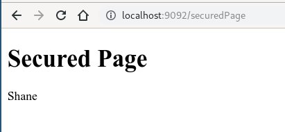

OAuth 2.0 的协议标准 RFC 6749 于 2012 年 10 月发布.
目前已经有一些成熟的应用框架.
其中, Java 方面
有基于 Maven 的 ScribeJava, 是一个 OAuth 封装库. 需要添加 maven 来使用, 集成了包括 FaceBook, Renren, Sina 在内的众多平台, 不过暂时还不包括 QQ 和微信.
有基于 Spring Security 的 akta oauth.
Next we will build an OAuth 2.0 web application and authentication server using Spring Boot and Spring Security. After that, you’ll use Okta to get rid of your self-hosted authentication server and simplify your Spring Boot application even more.
Let’s get started!
Prerequisites
JDK
IDE
Maven
Create an OAuth 2.0 Server
Start by going to Spring Initializr and generate a Gradle project with the following settings:
- GroupId: com.okta.spring
- ArtifactId: authapp
- Add one dependency: Web
You need to add one dependency to the pom.xml file:
<dependency>
<groupId>org.springframework.security.oauth</groupId>
<artifactId>spring-security-oauth2</artifactId>
</dependency>
If you get an error about JAXB, it’s because you’re using Java 11 or later. To fix this, add JAXB to you pom.xml
implementation 'org.glassfish.jaxb:jaxb-runtime'
This adds in Spring’s OAuth goodness.
Update the src/main/resources/application.properties to match:
server.port=9091
server.servlet.context-path=/auth
user.oauth.clientId=R2dpxQ3vPrtfgF72
user.oauth.clientSecret=fDw7Mpkk5czHNuSRtmhGmAGL42CaxQB9
user.oauth.redirectUris=http://localhost:9092/login/oauth2/code/
user.oauth.user.username=Shane
user.oauth.user.password=abcd
This sets the server port, servlet context path, and some default values forthe in-momory, ad hoc generated tokens the server is going to return to the client, as well as for our user’s username and password. In production, you would need to have a bit more of a sophisticated back end for a real authentication server without the hard-coded redirect URIs and usernames and passwords.
Update the AuthServerApplication class to add @EnableResourceServer:
src/main/java/com/akta/spring/authapp/AuthServerApplication.java
1 | package com.akta.spring.authserver; |
Create a new class AuthServerConfig in the same package as your application class. This Spring configuration class enables and configures an OAuth authorization server.
src/main/java/com/akta/spring/authserver/AuthServerConfig.java
1 | package com.akta.spring.authserver; |
The AuthServerConfig class is the class that will create and return our JSON web tokens when the client properly authenticates.
Create a SecurityConfiguration class:
src/main/java/com/akta/spring/authserver/SecurityConfiguration.java
1 | package com.akta.spring.authserver; |
The SecurityConfiguration class is the class that actually authenticates requests to your authorization server. Notice near the top where it’s pulling in the username and password from the application.properties file.
Lastly, create a Java class called UserController:
src/main/java/com/akta/spring/authserver/UserController.java
1 | package com.akta.spring.authserver; |
This file allows the client apps to find out more about the users that authenticate with the server.
That’s your authorization server! Not too bad. Spring Boot makes it pretty easay. Four files and a few properties. In a little bit you’ll make it even simpler with Okta. but for the moment, move on to creating a client app you can use to test the auth server.
Maven package and then start the authorization server:
java -jar target/authserver-0.0.1-SNAPSHOT.jar
Wait a bit for it to finish running. The terminal should end with something like this:
...
2019-11-10 19:40:31.036 INFO 24574 --- [ main] o.s.b.w.embedded.tomcat.TomcatWebServer : Tomcat started on port(s): 9091 (http) with context path '/auth'
2019-11-10 19:40:31.051 INFO 24574 --- [ main] c.a.s.authserver.AuthServerApplication : Started AuthServerApplication in 4.772 seconds (JVM running for 5.386)
^C2019-11-10 19:40:45.002 INFO 24574 --- [ Thread-2] o.s.s.concurrent.ThreadPoolTaskExecutor : Shutting down ExecutorService 'applicationTaskExecutor'
Build Your Client App
Back to use Spring Initializr to create a new Maven project with the following settings:
- Group: com.okta.spring
- Artifact: authclient
- Add three dependencies: Web, Thymeleaf, OAuth2 Client
This time you need to add the following dependency to your pom.xml file:
<dependency>
<groupId>org.thymeleaf.extras</groupId>
<artifactId>thymeleaf-extras-springsecurity5</artifactId>
<version>3.0.4.RELEASE</version>
</dependency>
Rename the src/main/resources/application.properties to application.yml and update it to match the YAML below:
src/main/resources/application.yml
1 | server: |
Notice that here you’re configuring the clientId and clientSecret, as well as various URIs for your authentication server. These need to match the values in the other project.
Update the AuthClientApplication class to match:
1 | package com.okta.spring.authclient; |
Create a new Java class called WebController:
WebController.java
1 | package com.okta.spring.authclient; |
This is the controller that maps incoming requests to your Thymeleaf template files(which you’ll make in a sec).
Create another Java class named SecurityConfiguration:
SecurityConfiguration.java
1 | package com.okta.spring.authclient; |
This class defines the Spring Security configuration for your application: allowing all requests on the home path and requiring authentication for all other routes. It also sets up the Spring Boot OAuth login flow.
The last files you need to add are the two Thymeleaf template files. A full look at Thymeleaf templating is well beyond the scope of this tutorial, but you can take a look at their website for more info.
The templates go in the src/main/resources/templates directory. You’ll notice in the controller above that they’re simply returning strings for the routes. When the Thymeleaf dependencies are included the build, Spring Boot automatically assumes you’re returning the name of the template file from the controllers, and so the app will look in src/main/resources/templates for a file name with the returned string plus .html.
Create the home template: src/main/resources/templates/index.html:
index.html
1 |
|
And the secured template: src/main/resources/templates/securePage.html:
securePage.html
1 |
|
I’ll jest point out this one line:
<span th:text="${#authentication.name}"></span>
This is the line that will insert the name of the authenticated user. This line is why you needed the org.thymeleaf.extras:thymeleaf-extras-springsecurity5 dependency in the ‘pom.xml’ file.
Start the client application after successful maven package.
java -jar target/authclient-0.0.1-SNAPSHOT.jar
Wait a moment for it to finish. The terminal should end with something like this:
2019-11-10 20:32:39.527 INFO 26402 --- [ main] o.s.b.w.embedded.tomcat.TomcatWebServer : Tomcat started on port(s): 9092 (http) with context path ''
2019-11-10 20:32:39.539 INFO 26402 --- [ main] c.o.s.authclient.AuthClientApplication : Started AuthClientApplication in 4.586 seconds (JVM running for 5.225)
Test the Resource Server
Navigate in your browser of choice to your client app at http://localhost:9092/

Click the Login link, and you’ll be directed to the login page:

Enter username “Shane” and password “abcd” (from the application.properties file of server).
Click Sign In and you’ll be taken to the super fancy securePage.html template that should say “Secured Page” and “Shane”.

Understand the code

Login with Baidu
Create an app at Baidu Developer Center: http://developer.baidu.com/console#app/project
Remember the API Key(client ID) and Secret Key.
And set authorization redirect page as: www.baidu.com
Here we request:

After the user click login, authorization code will be responsed as ‘code=xxx’